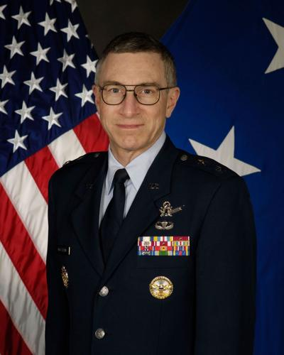

USAF Academy — B.S. Astronautical Engineering, 1979
Commissioned as a second lieutenant upon graduation. Immediately entered graduate studies at MIT.

Major General, United States Air Force (Retired)
Commissioned as a second lieutenant upon graduation. Immediately entered graduate studies at MIT.
Air Force Institute of Technology program. One year at MIT before entering active duty at Los Angeles AFB.
Returned to MIT from 1985–1988 on a John & Fannie Hertz Foundation Fellowship — one of the most competitive doctoral fellowships in applied science. Married Susan Wilkerson during this period (April 1985).
Professional military education, August 1994 to May 1995. Required for advancement to senior officer ranks.
Highlighted entries mark assignments with direct relevance to the UAP/SAP investigation. Critical entries mark the two positions most central to the case.
Los Angeles AFB, California
First assignment. Classified satellite payload development under the Secretary of the Air Force's black-world office — the Air Force's interface with the National Reconnaissance Office.
Los Angeles AFB, California
Promoted to division chief within the classified satellite enterprise at age ~27. Early indicator of fast-track status within NRO programs.
Cambridge, Massachusetts
Three-year break for PhD. Married Susan Wilkerson in April 1985. Hertz Fellowship is among the most selective in applied science.
Los Angeles AFB, California
Returned to classified satellite work at a more senior level. Sources note he received "large program leadership responsibilities" within the classified development units.
Buckley AFB, Colorado
Shifted to operations side. Aerospace Data Facility is a signals intelligence ground station — part of the NRO/NSA infrastructure.
Buckley AFB, Colorado
Returned to Buckley as squadron commander after Air War College. First command assignment.
Los Angeles AFB, California
Senior technical leadership of the GPS constellation program. First major non-classified assignment in the public record.
Los Angeles AFB, California
Directed the Space Based Laser program — a directed-energy weapons system intended for orbital deployment. Bridges the space and directed-energy threads that define his later career.
Kirtland AFB, New Mexico
First Kirtland assignment. Combined Space Vehicles + Directed Energy research under one command. This is when he enters the New Mexico ecosystem — Sandia, Kirtland, the foothills — that would become the geography of his disappearance 22 years later.
Hill AFB, Utah
Logistics and sustainment command. Broadening assignment en route to general officer ranks.
Los Angeles AFB, California
Second-in-command of the Air Force's primary space acquisition organization. Promoted to Brigadier General (Dec 2007).
Pentagon, Washington, D.C.
Pentagon-level oversight of all Air Force space acquisition. Transition toward the policy/oversight roles that follow.
Pentagon, Washington, D.C.
The most sensitive assignment in this dossier. The Special Access Program Oversight Committee provides administrative visibility into every SAP across the entire Department of Defense — acquisition, intelligence, and operations. If any UAP-related programs exist within the SAP framework, this office would be in the oversight chain. Promoted to Major General.
Wright-Patterson AFB, Ohio
Final command and capstone assignment. AFRL manages a $2.2B S&T portfolio across materials, sensors, propulsion, directed energy, space vehicles, and information. 10,800+ personnel. Wright-Patterson's institutional lineage traces back to 1947 Wright Field — the documented destination of Roswell debris. McCasland arrived at this command with prior SAPOC-level visibility into classified programs.
Albuquerque, New Mexico
Post-retirement civilian role. ATA specializes in precision pointing, inertial sensing, space situational awareness, and directed-energy-adjacent systems — the same technology stack from his military career. Returned to the Albuquerque / Kirtland ecosystem. BlueHalo was subsequently acquired by AeroVironment (2025).
Albuquerque, New Mexico
Defense consulting firm advising DoD and DoE clients. Business partner is James Tegnelia — former DTRA Director, DARPA Deputy Director, Defense Science Board member. Also served on the Kirtland Partnership Committee and Universities Space Research Association boards.
John & Fannie Hertz Foundation doctoral fellowship for PhD at MIT. One of the most competitive applied science fellowships in the United States.
Senior Member, IEEE. Associate Fellow, AIAA (American Institute of Aeronautics and Astronautics).
From his first assignment in 1980 through retirement in 2013, McCasland spent the majority of his career inside NRO-affiliated offices, classified satellite development, and SAP oversight. This is not someone with peripheral exposure to black programs.
The Executive Secretary role provided administrative oversight across every SAP in the DoD. If UAP-related programs exist anywhere in the classified structure, his office would have been in the chain.
WikiLeaks emails place McCasland at the center of the advisory network that became TTSA. DeLonge describes him as "very, very aware" and credits him with assembling the team: Elizondo, Semivan, Puthoff, Weiss.
NRO satellites → SAPOC oversight → AFRL command at Wright-Patterson → civilian directed-energy work in Albuquerque. Every thread in this investigation maps onto a stage of his career. That convergence is either coincidence or legibility.
Susan's statement that he "retired nearly 13 years ago with only common clearances since" is a specific pushback against the idea that he remained operationally involved. But knowledge doesn't expire with clearances. Whatever McCasland learned during his SAPOC tenure remains in his memory regardless of his current access status.
Wife. PhD astrophysics, NASA astronaut semifinalist, USAF Reserve Colonel, classified satellite imagery handler. Independently invited to Podesta UAP meeting.
Tom DeLonge
Described McCasland as his primary advisor and the organizer of the TTSA advisory team. WikiLeaks emails are the primary source.
John Podesta
Hosted the January 25, 2016 UAP meeting that both McCaslands were invited to. DeLonge served as intermediary.
Luis Elizondo
Former AATIP director. Named by DeLonge as part of the advisory network McCasland helped assemble.
Jim Semivan
Retired CIA officer. Named alongside Elizondo in the DeLonge advisory team.
Hal Puthoff
Physicist, remote viewing researcher, TTSA co-founder. Part of the advisory network per DeLonge emails.
Rob Weiss
Executive VP, Lockheed Martin Skunk Works. Named in DeLonge's Podesta meeting invitation.
Applied Technology Associates / BlueHalo → AeroVironment
Post-retirement employer (until ~2021). Defense contractor specializing in precision tracking, directed energy, space situational awareness. BlueHalo was acquired by AeroVironment in 2025. AeroVironment announced a $30M Albuquerque expansion (laser systems, space payloads) on March 3, 2026 — four days after the disappearance.
James Tegnelia — DBE Consulting LLC (business partner)
Co-founded defense consulting firm advising DoD and DoE clients. Tegnelia is former DTRA Director, DARPA Deputy Director, nuclear engineering professor, Defense Science Board member. Media quoted him as a "worried acquaintance" without disclosing the business partnership.